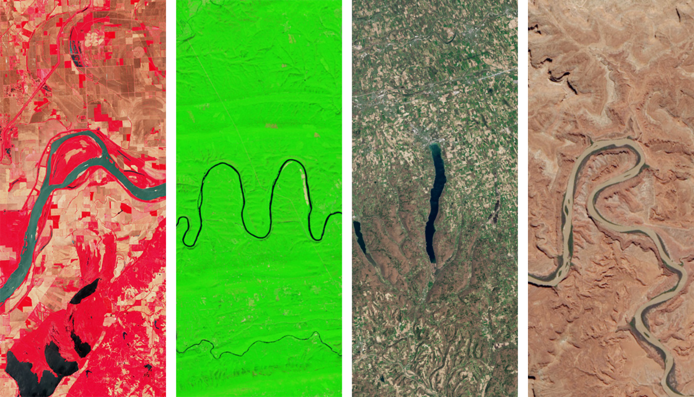
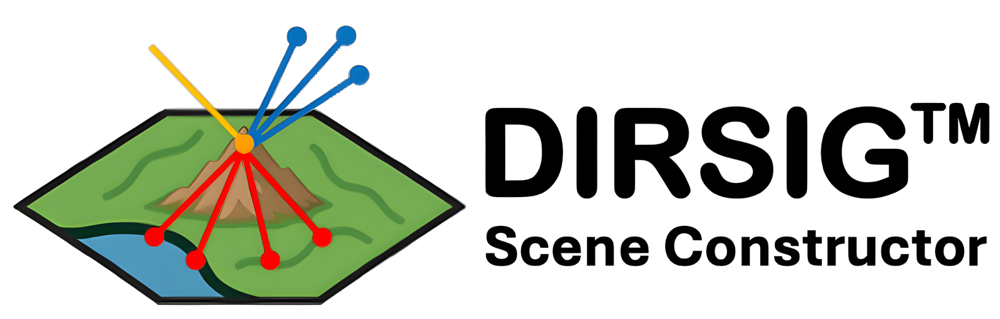
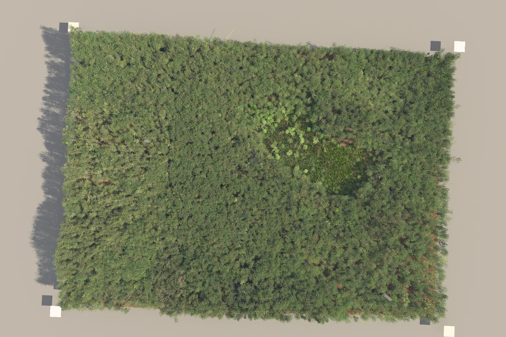
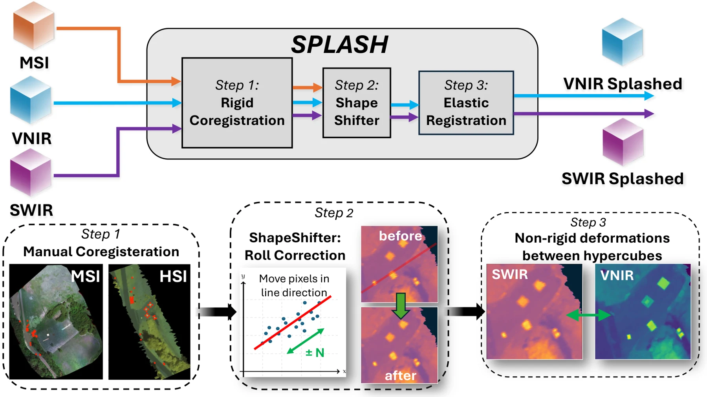
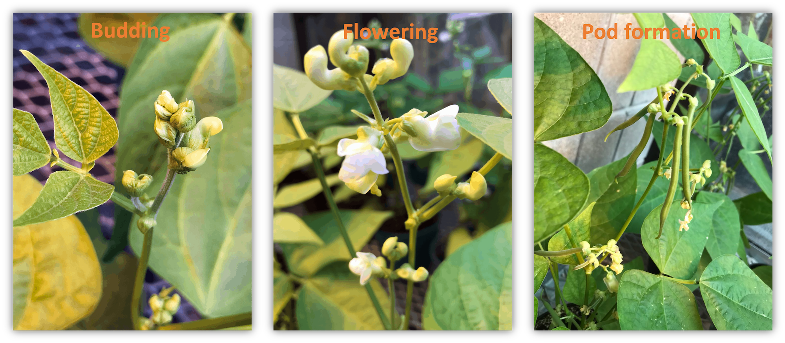
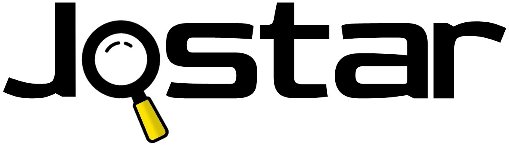

Temporal Hyperspectral Representation Learning for Biotechnology
Self-supervised temporal hyperspectral representation learning for biotechnology.
Research and software, from learning representations of Earth to simulating the sensors that observe it.

Self-supervised temporal hyperspectral representation learning for biotechnology.

Automated scene construction for Landsat-scale simulations and sensor trade studies.

Estimating atmospheric water vapor and propagating uncertainty in Landsat split-window surface-temperature products.

Estimating mixed material percentages inside forest voxels from 3D position and LiDAR intensity.

Aligning VNIR and SWIR pushbroom imagery from separate drones through global, row-wise, and elastic correction.

Connecting greenhouse spectroscopy with drone-based field observations for yield prediction and crop maturity assessment.

Nine feature-selection algorithms for regression and classification, with a familiar Scikit-Learn-style interface.